延遲不是玄學，
是可以拆開來量的。
Fovea 把手機變成 OBS 的攝影機來源，走 USB 或 WiFi。相機的輸出直接就是硬體 編碼器的輸入，中間沒有一次複製；到了電腦端也不排隊，畫面一到就交給 OBS。
Windows · macOS · 目前是 v0.1.0

01 / 延遲預算
毫秒都花到哪裡去了
每一段都列出來。琥珀色是實際量到的，方法與原始樣本寫在專案的 量測文件裡；網底是設計預算——還沒在實機上量到，照實標示， 不混進總結裡當成戰績。
1080p30 · USB
單位 ms合成素材下這三段加起來不到一毫秒；換成真實相機畫面，解碼是 5.9 ms。 電腦端能省的已經省完了——剩下的差距在手機那頭。
02 / 管線
一條路徑，零拷貝的那一段畫粗

手機端 · Kotlin
擷取
編碼器開低延遲模式、固定位元率、不產生 B-frame。自動曝光的 fps 範圍被鎖死， 所以光線一暗畫面不會偷偷掉到 15fps。
USB · adb forward
傳輸
走 abstract socket，不在手機上開對外的網路埠，也不需要知道 IP。轉接是接你電腦上
既有的 adb server——我們不夾帶第二支 adb.exe，因為那正是同類工具
一用就斷線的原因。
電腦端 · OBS plugin
解碼
FFmpeg 低延遲解碼，只用 slice 層級的多執行緒——frame 層級雖然更快， 代價是輸出必然落後好幾格。
03 / 為什麼不排隊

排隊就是延遲
佇列只留三格，而且滿了丟最舊的那張。傳輸跟不上時，你要看到的是 最新的畫面，不是三格之前的畫面。
送進 OBS 時關掉緩衝，畫面一到就顯示，晚到的直接丟掉。這比解碼器選型 更值得在意——電腦端整段管線只佔個位數毫秒，緩衝一格就是 33 毫秒。
上圖為示意，未標任何毫秒數字
04 / 網路變差的時候

把畫質換成順暢，然後慢慢換回來
送出緩衝被刻意壓到 256 KB。預設的核心緩衝可以藏好幾百 KB，寫進去當下不阻塞、 看起來一切正常，但畫面已經在排隊——使用者感受到的是越用越延遲。
壓小之後傳不動就會立刻阻塞，我們才有機會知道並降位元率。恢復時刻意慢慢升回去， 避免在邊緣反覆震盪。正常網路下實測 23,690 kbps 不會誤判降速。
05 / 實測
已經量到的
這些是實際跑出來的數字，不是估的。量測方法、原始樣本與環境限制都寫在專案的 量測文件裡；量不到的部分也一併寫著為什麼量不到。
| 項目 | 結果 | 條件 |
|---|---|---|
| 解碼一張影格 | 5.9 ms | 實機 1080p30 相機畫面，23.7 Mbps |
| 擷取 → 到達 PC | 9.8 ms | 實機中位數，p95 21.2 ms |
| 影格間隔穩定度 | 33.7 ms | 實機最小＝最大＝中位數 |
| 收到封包到交給 OBS | 0.85 ms | 與送端共用同一個時鐘 |
| 連續串流 | 19,569 張 | 652 秒，30.001 fps |
| 與理論影格數的差異 | 1 張 | 0.005% |
| 記憶體與 handle | 無成長 | 11 分鐘後低於起始值 |
| 斷線自動恢復 | 5 / 5 | 1.1–1.3 秒，影格續增 |
| USB 可用頻寬 | 194 Mbps | 實測 adb 傳輸 |
06 / 刻意的取捨
幾個看起來反直覺的決定
用軟體解碼，不用硬體解碼
1080p 的軟解只要幾毫秒，而硬解要把畫面從顯示卡讀回主記憶體交給 OBS—— 光是回讀的成本通常就超過省下來的解碼時間。
佇列只留三格，而且丟舊的
排隊就是延遲。傳輸跟不上時使用者要看到的是最新畫面，不是三格之前的畫面。
不夾帶自己的 adb.exe
兩支 adb 版本不同會互相把對方的 server 殺掉，症狀是「用一用就斷線」。 我們直接接你電腦上既有的那一支。
鎖住自動曝光的 fps 範圍
相機在暗處會自動降到 15fps 換取亮度。挑 fps 範圍時必須先比上限再比下限， 否則會挑到可變範圍，畫面在光線一暗時偷偷掉格。
07 / 取得
下載
OBS plugin — Windows
需要 OBS Studio 32.2.x。解壓後把 fovea 資料夾放到
C:\ProgramData\obs-studio\plugins\——是 ProgramData 不是 AppData。
OBS plugin — macOS
需要 OBS Studio 32.x，Apple Silicon。安裝後要跑一次
xattr -dr com.apple.quarantine，否則 Gatekeeper 會擋掉。
還沒有的東西
- 手機端 app 尚未上架。Android 版已在實機運作，但還沒完成 release 簽章與商店上架流程。
- iOS 版不存在。那需要用 Swift／AVFoundation／VideoToolbox 從零寫，不是把 Android 版移植過去。
- Intel Mac 沒有建置。目前只有 arm64。
- 兩個執行檔都沒有數位簽章，Windows 的 SmartScreen 與 macOS 的 Gatekeeper 都會有提示。
- 最慢的影格解碼會衝到 62／97 ms，推測與 keyframe 有關，尚未確認。這是目前最值得修的問題。